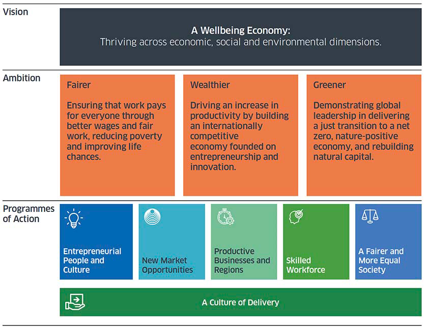
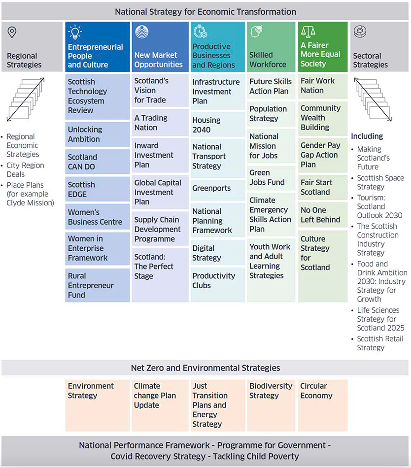
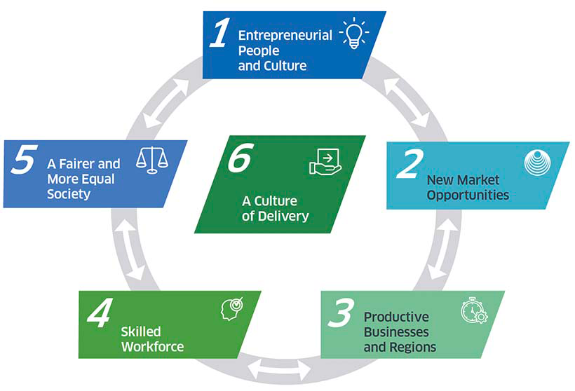

NSET
https://www.gov.scot/publications/scotlands-national-strategy-economic-transformation/
5 key areas
- stimulating entrepreneurship
- opening new markets
- increasing productivity
- developing the skills we need for the decade ahead
- ensuring fairer and more equal economic opportunities
UK internal Market Act
- Read about the Internal Market Act here
- It effectively limits what Scotland can leverage due to having to accept the rest of the UK's standards
- 2 main Principles
- Mutual Recognition: A good, which complies with regulation permitting its sale in the part of the UK it is produced in or imported into, can be sold in other parts of the UK, without complying with equivalent regulation there.
- Non-Discrimination: Regulatory requirements that discriminate against a good from another part of the UK, whether directly or indirectly, will not be enforceable.
Future Economy
The ambition of this strategy is not just to grow our economy but, in doing so, to transform our country's economic model so that we build an economy that celebrates success in terms of:
- economic growth
- environmental sustainability
- quality of life and equality of opportunity and reward.
Scotland will be recognised for:
- An international benchmark for how an economy can transform itself, de-carbonise and
- A great place to live and work
- The best place to start and to grow a business or social enterprise
- A leader in its chosen areas of research and development
- A country where economic power and opportunity are distributed fairly across our entire country
- A magnet for inward investment and global private capital;
- An outward-looking nation, engaging internationally, exerting a meaningful influence on the policies, trends and events that shape our world; and
- A nation where people can continually upgrade their skills and help shape their workplaces.
- A nation where employers have the supply of skills they need, and fully utilise these.
NSET Vision

NSET Alignment with current

Programmes of Action
- It focuses on the programmes with the greatest potential to shift the economic dial and marks a shift in our approach to delivery.
- New initiatives identified in this strategy do not mean that we are abandoning actions or initiatives that have proven to work. We will "double down" on the things that are shown to work.
Five key programmes of action:

How big is it
The strategy contains 6 programmes, 18 projects and 77 actions
1. Entrepreneurial People and Culture
Entrepreneurs and an entrepreneurial mindset are vital at a time of change. It is people who make the difference. We will create a culture in which entrepreneurship is encouraged, supported and celebrated, and where Scotland is recognised as one of the best countries in the world to start and to grow a business.
Through our four new projects we will:
- embed first rate entrepreneurial learning across the education and skills systems;
- create a world class entrepreneurial infrastructure of institutions and programmes providing a high intensity pathway for high growth companies;
- attract and retain the very best entrepreneurial talent from at home and abroad; and
- build an entrepreneurial mindset in every sector of our economy.
Key actions we will implement:
- Promote project-based entrepreneurial learning in school and post-16 education.
- Embed entrepreneurship in the Young Person's Guarantee to cultivate the business leaders of tomorrow.
- Expand the scope of the current tech-scaler programme to become 'start-up scalers' – world-class incubation and developmental environments for all high growth start-ups.
- Create a national system of 'pre-scaler hubs' to help new businesses with high growth prospects access world class support and advice.
- Provide access to support programmes from amongst the most under-represented groups, particularly women, those on low incomes and those without qualifications at further or higher education.
- Appoint a Chief Entrepreneurship Officer in the Scottish Government to work in partnership with industry and investors to drive forward our ambitions on entrepreneurship.
- Attract international entrepreneurs to Scotland by rolling out an international marketing and engagement platform for Scotland's start up scene.
- Attract entrepreneurial students from around the world by supporting Scotland's universities to provide post education pathways.
- Expand the application of entrepreneurial thinking and approaches to public service reform.
- Launch a new National Challenge Competition for Economic Transformation.
2. New Market Opportunities
Rapid global decarbonisation will represent a profound change, far outwith the control of any government or sector. The transition to net zero is not just an environmental imperative but an economic opportunity – one where Scotland will become world leading and secure first-mover advantage.
Through our three new projects we will:
- build on Scotland's strengths to win an ever greater share of domestic and international market opportunities;
- support the development of Scottish supply chains, laying the foundations of a net zero industrial strategy; and
- attract and deploy significant domestic and international private investment in Scotland.
Key actions we will implement:
- Promote Scotland as an innovative test bed for new technologies and markets.
- Provide capital investment to support renewable hydrogen production to make Scotland a leading nation in the production of reliable, competitive and sustainable hydrogen.
- Deliver on the ambitions of ScotWind and future renewable energy developments.
- Expand our Supply Chain Development Programme to improve the capacity, capability and development of Scottish supply chain.
- Adopt a cluster building approach to strengthen our position in new markets.
- Establish an investor panel, chaired by the First Minister, to attract investment to a pipeline of projects in Scotland that support our transition to net zero.
- Establish a values-led, high integrity market for responsible private investment in natural capital.
3. Productive Businesses and Regions
We must deliver a step-change in our productivity performance and address regional inequalities in economic activity as well as boosting traditional and digital infrastructure.
Through our three new projects we will:
- improve connectivity infrastructure and digital adoption across the economy;
- upskill business and public sector leaders, pioneering new approaches to driving productivity improvements; and
- realise the potential of the different economic and community assets and strengths of Scotland's regions.
Key actions we will implement:
- Establish a digital productivity fund focused on supporting business to improve firm-level productivity.
- Design and implement programmes on the practical actions business and leaders can take to boost productivity.
- Appoint productivity ambassadors to promote understanding of driving productivity improvements.
- Launch the Centre for Workplace Transformation to support experimentation in ways of working post-pandemic.
- Reinforce our commitment to regional collaboration through our Regional Policy Review.
- Introduce Community Wealth Building legislation.
4. Skilled Workforce
A skilled population is fundamental to business productivity and economic prosperity. We will focus our activity on the transition to net zero, the digital revolution, and lifelong training making sure employers have the supply of skills they need.
Through our three new projects we will:
- adapt the education and skills system to make it more agile and responsive to our economic needs and ambitions;
- support and incentivise people, and their employers, to invest in skills and training throughout their working lives; and
- expand Scotland's available talent pool, at all skills levels, to give employers the skills pipeline they need to take advantage of opportunities.
Key actions we will implement:
- Develop proposals for a national digital academy focused around the provision of SCQF level 6 qualifications.
- Implement the next phase of the Green Jobs Work force Academy and launch a new skills guarantee for workers in carbon intensive industries.
- Implement a lifetime upskilling and retraining offer that is more straightforward for people and business to access and benefit from.
- Target more skills investment and support to working age people in poverty.
- Develop a new Skills Pact to underpin our commitment to strong partnership working with both employers and unions.
- Implement a focused Talent Attraction programme to attract key skills and talent from the rest of the UK.
5. A Fairer and More Equal Society
Significantly reducing poverty boosts our economy, but achieving it requires better wages and fair work. We will ensure that work provides a sustainable standard of living and a genuine route out of poverty.
Through our two new projects we will:
- tackle poverty through fairer pay and conditions; and
- eradicate structural barriers to participating in the labour market.
Key actions we will implement:
- Apply fair work conditionality to grants, requiring payment of real living wage, and channels for effective workers' voice.
- Deliver sectoral fair work agreements in areas of low pay, in partnership with industry and trades unions, that deliver payment of the real living wage, better security of work, and wider fair work first standards.
- Support parents to increase their incomes from employment as part of cross-government action to deliver upon the ambitious targets set through the child poverty (Scotland) act 2017.
- Simplify the employability system by implementing No One Left Behind.
- Take further steps to remove barriers to employment and career advancement for disabled people, women, those with care experience and people from minority ethnic groups.
- Build on the principles of the Young Person's Guarantee, developing an all age guarantee of support for those most disadvantaged in the labour market.
- Establish a Centre of Expertise in Equality and Human Rights within Scottish Government.
6. A Culture of Delivery
Success demands a culture of delivery and accountability in which objectives are shared and responsibilities are clearly allocated and accepted across the public, private and third sector.
Through our three new projects we will:
- strengthen accountability and transparency;
- transform the way support is delivered to people and businesses across Scotland; and
- measure success.
Key actions we will implement:
- Restructure existing boards to create a National Strategy for Economic Transformation Board co-chaired by the Cabinet Secretary for Finance and Economy and a figure from the private sector, to include worker representatives.
- Introduce a common accountability framework with delivery partners with senior named leaders both inside and outside the Scottish Government.
- Provide multi-year budgets through Resource Spending Reviews.
- Establish a programme to radically transform the way in which the public sector in Scotland provides support for workers and businesses.
- Publish an annual progress report to enhance public accountability.
- Publish a wellbeing economy monitor, to build on Scotland's leading work on integrating wellbeing into its measurements and policy development.
- Ensure a consistent approach to evaluation to drive continuous improvement and greater understanding of the return on investment.
The Conclusion
We all want Scotland to be successful.
Success means a strong economy where good, secure and well-paid jobs and growing businesses have driven a significant reduction in poverty and, in particular, child poverty.
We will be a nation of entrepreneurs and innovators, with resilient supply chains and competitive advantages in the new industries generated by technological change, scientific advance and the climate emergency.
And our society will be one in which everyone can participate in economic success, in every community and every region.